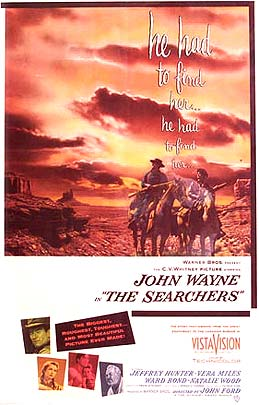

|

THE SEARCHERS: 50th Anniversary Retrospective Review
1956 No MPAA rating John Wayne: Ethan Edwards Jeffrey Hunter: Martin Pawley Natalie Wood: Debbie Edwards Walter Coy: Aaron Edwards Dorothy Jordon: Martha Edwards Directed by John Ford Written by Frank S. Nugent. The novel, by Alan Le May. Running time: 116 minutes
|
CrAiGeR's
RANK: # 7
“Injun will chase a thing till he thinks he's chased it enough. Then he quits. Same way when he runs. Seems like he never learns there's such a thing as a critter that'll just keep comin' on. So we'll find 'em in the end, I promise you. We'll find 'em. Just as sure as the turnin' of the earth.” - Ethan (John Wayne) in THE SEARCHERS THE SEARCHERS was John Ford’s 115th feature film. That in itself is a streak of prolific filmmaking that will likely never be eclipsed. Consider also that – when he began shooting the legendary western – he was already a four-time Academy Award winning director (again, a feat that will likely not be bested). His career began in 1914 and he started to direct films in 1917. He would eventually go on to become one of the most admired, cherished, and influential directors among the Hollywood and critical elite. It’s hard to find another director in the last century of the cinema that could take claim to having such an all-encompassing sphere of influence that Ford had. Within ten to fifteen years of THE SEARCHERS debut a brand “New Wave” of filmmakers hailed it as the film that influenced them the most. Considering that the list of this talent includes everyone from Paul Schrader, Steven Spielberg, John Milius, Jean-Luc Godard, Akira Kurosawa, George Lucas, and Martin Scorsese is noteworthy in itself. In the annals of the western genre, some critics have hailed THE SEARCHERS as its greatest achievement. Recently, Entertainment Weekly proudly placed it high on its list of the Greatest Films of All-time. The film has dated, to be sure, and our collective consciousness responds to its themes a bit differently today than the audiences of 1956, but THE SEARCHERS is Ford’s greatest film and – without a doubt – a masterpiece. It was a revisionist western before the word was even a thought in one’s mind and without the film there would have been none of the future’s other classic, masterful revisionist westerns, like Clint Eastwood’s THE OUTLAW JOSEY WALES and his landmark UNFORGIVEN. It also could be readily argued that THE SEARCHERS' influence spanned even beyond the genre itself. There are clear-cut echoes of the film in other works of such varying narratives. The virtues and moral and ethical codes of Ford’s western can easily be spotted in films like Kurosawa’s SEVEN SAMURAI, which the director himself admitted was an Eastern meditation on Western themes. Even consider films that are such polar opposites, like George Lucas’ STAR WARS: EPISODE IV: A NEW HOPE, where its hero’s journey discretely hints at the journey of THE SEARCHERS' main character. STAR WARS has often been called an intergalactic western in space. Some of Lucas’ images very much reflect and pay homage to Ford’s film. An early moment in A NEW HOPE - which shows a befuddled and shocked Luke Skywalker return to his farm homestead to see his family killed and his home burnt to the ground - eerily echoes a similar scene in THE SEARCHERS where it’s hero returns home to see his family destroyed. Perhaps even more clear cut is the similarities between THE SEARCHERS to the films of Paul Schrader and Martin Scorsese, more specifically, their 1976 collaboration, TAXI DRIVER. A cursory examination of the film may not yield any correlation with Ford’s film, but the more one views TAXI DRIVER the more THE SEARCHERS appears to be a very strong inspiration. The quest of THE SEARCHER’S main anti-hero, Ethan, strongly mirrors the obsessive quest of TAXI DRIVER’s Travis Bickle. It can be easily argued that Bickle is the more sociopathic of the two, but both characters seem born from similar material. Both live in societies that are decaying. Both live in worlds where the only clear cut sign of empowerment is wanton violence and force. More crucially, both men engage in their own self-congratulatory and righteous missions to save women that they feel are in need of a savoir. Both men are also isolated loners who see that the only escape from their disparity is to embark on moral quests. For Ethan, it is to rescue his teenage niece who he feels has been kidnapped and turned into something abnormal and inhuman by Native “savages." For Bickle, he also tries to save a young teenager from what he sees is a lifestyle of dehumanizing influence. In his case, he is trying to rescue a hooker from her pimp. Finally, in both men’s cases, there are some subtle hints that both women are not entirely in need of saving, which further accentuates the men’s own fierce determination and fanatical impulses. That is what separates THE SEARCHERS from other westerns that came before it. It marked a definite turning point in the western genre, which in itself was on a downward spiral in terms of widespread popularity. The film, like most of Ford’s famous works, is applauded and loved for its cinematography and Vista Vision images of the natural environment (no one framed the ethereal and gorgeous red stoned rock formations of Monument Valley like Ford did). Yet, beyond the film’s incredible stunning visuals are themes that dig deeper and resonate equally deep where other westerns dared not to go. THE SEARCHERS, at its core, was a reflection on racism and bigotry and how one’s own self-destructive and morally backward outlook on society gets the better of him. The film also deals with the notion and identity of the American character in the midst of untamed wildernesses of post-Civil War life. More than anything, the film’s protagonist, Ethan, mixes his own depression, anger, guilt, and bigoted views together to fuel his desire to be a savoir. There is a complexity to the nuanced themes that made THE SEARCHERS a very atypical western by 1950’s standards, which I guess is what makes it even more absorbing today. The film has also been labeled as being almost Homeric in terms of it telling of a story that involves an odyssey. That comparison is apt, in my mind. The narrative is a meandering and epic journey of psychological torment and warped ideology. Ethan lets his hate and anger spawn his own odyssey and journey to “free” his niece from Natives. His quest spans over five years. Nothing stops this man, not his advancing age, or the longevity of the journey, nor even the harsh elements itself. Deep down, he has to find and save this girl from a society he deems as horrific for its sadism. The film’s tagline alone on its poster speaks volumes about Ethan’s journey: "He had to find her…her had to find her...he had to find her.” Now, it has also been argued whether or not the film was liberal minded for its time about its portrayal of racism and bigoted attitudes about Native Americans. Does Ford chastise Ethan’s fanaticism or celebrate it? It is clear that the film’s so-called “hero” is ethically unsound and morally loathsome. He’s a jerk. There are two ways to do things in his mind – his way or no way. Ethan’s impulses are brought upon by unyielding hatred of Indians and the thought of his family being impregnated by their unholy lifestyle. There is nothing modest or altogether wholesome about Ethan’s yearning to save his niece. Yet, THE SEARCHERS comes across as being oftentimes ambiguous, which makes it even more intriguing. Certainly, the film is more emotionally and thematically complex than the other westerns of its time. Certainly, most genre pictures leading into THE SEARCHERS portrayed Native Americans in a less than hospitable and magnanimous manner. Ford’s film, at least, tries to dive into some heated waters that other films never did. To our 21st Century eyes, Ethan is a vengeful, hateful, and despicable SOB that allows his prejudicial world view cloud any sense of decency that he could have had. It’s interesting to decipher whether 1950’s audiences – pre-Civil Rights era – where inclined to share similar reactions to the film. I think that, to a small degree, the film played off less as an exploration into racism than it did a romanticized western of gallantry and heroism to the 50’s viewers. Perhaps it also did for Ford and its main star, John Wayne, who up until his involvement in THE SEARCHERS was the very epitome of good, old fashioned American gumshum, courage, and heroism. Wayne may have won his first and only Oscar decades later for TRUE GRIT, but his performance in THE SEARCHERS remains his finest and most indelible. Wayne is often unfairly criticized as a “bad actor.” Those nitpicky critics miss the point altogether. Wayne's enormous strengths as an actor were neither in his vocal range nor in his overall breadth as an actor. The man had very little range, per se, as an actor. However, Wayne was a masterful performer in terms of being a presence on screen. Sure, his line delivery was often stilted and wooden, but he often compensated for these deficiencies by his larger-than-life visage. The Duke may not have been able to achieve notoriety as a “great” thespian, but no one in the history of the cinema had his on-screen vitality. When the Duke set out to save his niece in THE SEARCHERS, you believed he was gonna die trying. More significantly, Ethan represents Wayne at least attempting to play darker, edgier roles than he did in the past. He starred in an unbelievable number of films under Ford’s tutelage before SEARCHERS - nine to be exact. I think that the key to THE SEARCHERS' overall effectiveness is primarily in terms of the scope and rugged forcefulness of Wayne’s performance in it. He is the anchor to the whole enterprise. Without his world-weary, beguiled, and spiteful performance, the film would grind to an unsatisfying halt. Wayne already had made his name synonymous with the Western in films like THE BIG TRAIL, THE SPOILERS, RED RIVER, THE THREE GODFATHERS, THE FIGHTING KENTUCKIAN, STAGECOACH, FORT APACHE, SHE WORE A YELLOW RIBBON, RIO GRANDE, and HONDO. However, THE SEARCHERS was a stark turning point for the actor. For the first time, he played a role that did not instantaneously inspire our hero worship. Ethan was an anti-hero who was eventually forced to let his racism lead him down a path to damned isolation and loneliness. Wayne always professed that Ethan was his favourite and best character he ever played in his 50-plus year career. He even named one of his sons Ethan in homage to the film. The film was based on a novel of the same name and was adapted for the screen by Frank S. Nugent. The novel, by Alan Le May, was first serialized as a short story in the fall 1954 issues of the Saturday Evening Post. Its first title was “The Avenging Texans” and it had many similarities with the film’s script in terms of concerning a Comanche kidnapping of a white girl in Texas in 1838. The film mirrors this story and adds to it the obsessive quest of Ethan to save the white girl. Made even direr is the fact that Comanches murdered most of his family and burned their home to the ground. Ethan, reaching a boiling point, sets out to rescue his niece. However, he does not want to rescue her in the conventional sense. He will rescue her by shooting her dead when he finds her. Why? Because, in his mind, she has become some sort of hell spawn of the devilish Comanche. Again, Ethan’s journey can invite simultaneous condemnation and admiration, depending on you point of view. Should we admire the man? After all, in the film’s famous last scene - where he embraces Debbie (Natalie Wood) - there are some that point out that the character is redeemed; hence, his journey was just. Yet, the man is so twisted leading to that point that one could easily debate whether it’s right to root for him in the first place. Ethan was a Confederate soldier who takes great pride in bragging that he never surrendered. After the war he becomes a lonely wanderer. At the film’s opening he arrives at his brother Aaron’s (Walter Coyt) and his wife Martha’s (Dorothy Jordon) home. Ethan is damaged goods, to say the least. When he meets Martin (Jeffrey Hunter) he reveals his bigotry by stating that he thought he was a half-breed. Martin claims to be one-eighth Comanche. To Ethan, any inkling of Indian blood is more than he likes. The story reveals that he rescued Martin when Indians killed his family and he left him with Martha and Aaron to be raised. When the home is destroyed and Debbie is missing. Martin desperately wants to help Ethan, but he remains persistently rude and inflammatory towards him throughout the mission. It’s hard to embark on a quest of revenge when one of your party members – albeit very slightly – reminds you of the enemy. Their quest continues for years. Throughout it all Martin begs for Ethan to show mercy on Debbie, who he plans to ruthlessly gun down. Martin asks for Ethan to show restraint. He wants her to be alive when they find her. Ethan is stubborn and will not see any way out of his quest. “Livin’ with Comanche’s ain’t livin’,” he screams back at one point, utterly typifying his hatred and indignation of Natives as a whole. I think that, for the first time, THE SEARCHERS presented a legitimate and obvious racist in the form of its main character. Other films have had subtle hints here and there, but Ford’s film reveals it to be that much more obvious and evident. This film focuses so much more on this element. In hindsight, Wayne’s choice to play such a vindictive and unruly lot can be seen as courageous on his part. Wayne built a career of playing chivalrous crusaders, so Ethan in THE SEARCHERS represented such a decided change of tone and place for the actor. And – yes – he does not kill Debbie in the end, but is he really saved? He takes Debbie home with him, but is he honestly any less of a bigot? Beyond its themes and rich characters, THE SEARCHERS remains a seminal visual masterpiece that only Ford could construct. He had such a gift and unprecedented ability to frame his westerns in luminous and sprawling vistas. He often made use of Monument Valley and his compositions showed a painterly love of the scenery. His command of the camera and using it to reveal mood is also noteworthy. Just look at the scene where Ford reveals Ethan’s reaction to his family killed and their home burned to the ground. Perhaps my favourite single shot occurs at the end. Much like Eastwood would do later his own films – like UNFORGIVEN – Ford shot Ethan from the POV from inside of the home looking outside. The home inside is dark and shadowy and frames the lonely figure of Ethan set against the landscape of the wilderness in the foreground. The composition here says a lot about the character. Ethan is framed by the darkness of the home’s doorway, which is a reflection on his deluded soul. Much of John Ford’s THE SEARCHERS has aged rather obviously. Some of the subplots seem silly now and many of the supporting performances are stilted and awkward. Yet, THE SEARCHERS should be viewed in modern context as one of the greatest and influential of all the westerns, if not a watershed film in the history of the medium. It represented its legendary director at the peak of his narrative and directorial powers. Furthermore, and most importantly, THE SEARCHERS emerged as Hollywood’s first revisionist western where plucky idealism and spirited values of the frontier hero were radically altered and changed. THE SEARCHERS also presented John Wayne not as the hero but almost as a subtle villain, a deplorable racist that embarks on a fixated and zealous mission that is fuelled by his hatred of Native Americans. This type of character and the issues surrounding him are nothing new to today's audiences, but they were fundamentally fresh and new in 1956. That’s what makes the film so strong even 50 years after its release. Its willingness to embark on social commentary in the western genre during a time when these types of films were more about black and white heroes (white men) and villains (Natives) is its most powerful trait. Ford’s film deconstructed this narrow-minded sensibility about the relationship between pioneer settlers and Native Americans. And, yes, The Duke gives a great performance. Not by relative standards, but by his standards. |